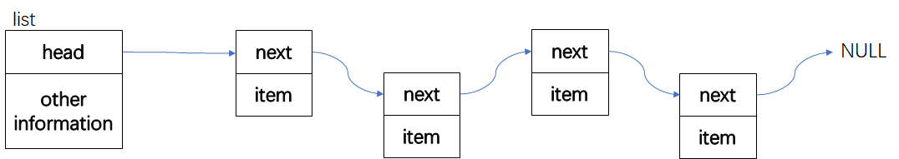

数组作为基本的数据结构被广泛使用在各种程序中，其查找十分方便，使用也十分简单。但要对其进行插入和删除操作，花费却十分昂贵。比如，对一个长度为n的数组在k位置进行插入操作，首先要把k到n-1位置的数据整体后移，而删除k则要把k+1到n-1 的位置整体前移。为了避免插入和删除的开销，我们可以使用不连续存储的链表。
链表的存储形式如下图所示：

对于链表的插入和删除操作我们可以直接修改next指针，对链表元素进行调整
为了编程方便我们在链表开头留出一个不使用的头节点
下面列出链表的声明类型:
typedef struct{
}Item; //链表的元素类型,由用户自定义
typedef struct node {
Item elem; //节点的数据域
struct node * next; //节点的指针域
}Node;
typedef struct {
Node * head; //头节点指针
//可保存其它信息,如链表长度,指向链表末的指针等
}List;
/*
*创建一个链表
*并返回指向链表的指针
*如果内存申请失败，则返回空指针
*/
List * ListCreate(void);
/*
*返回一个bool值
*如果链表为空，则返回true
*反之，则返回false
*/
bool ListIsEmpty(List * pl);
/*
*返回链表的大小
*返回值为一个unsigned int
*/
unsigned ListSize(List * pl);
/*
*接受一个cmp函数，用于比较Item元素
*返回第一个使cmp返回0的节点，
*若该节点不存在，则返回NULL
*/
Node * ListFind(List * pl, const Item * pi, int(*cmp)(const Item *, const Item *));
/*
*接受一个cmp函数，用于比较Item元素
*返回第一个使cmp返回0的前一个节点，
*若该节点不存在，则返回NULL
*/
Node * ListFindPrevious(List * pl, const Item * pi, int(*cmp)(const Item *, const Item *));
/*
*将pi指向的数据插入链表
*插入的数据位于链表开始
*返回一个指向新节点的指针
*/
Node * ListPushFront(List * pl, const Item * pi);
/*
*将pi指向的数据插入链表
*插入的数据位于pn指向的节点之后
*返回一个指向新节点的指针
*/
Node * ListInsertAfter(List * pl, Node * pn, const Item * pi);
/*
*删除pl指向链表的第一个元素
*元素的值赋给pi指向的元素
*返回一个指向被删除元素的下一个节点的指针
*/
Node * ListPopFront(List * pl);
/*
*删除pn指向节点的下一个元素
*元素的值赋给pi指向的元素
*返回一个指向被删除元素的下一个节点的指针
*/
Node * ListEraseAfter(List * pl, Node * pn);
/*
*遍历链表，使链表中每一个元素都被pfun作用
*/
void listTraverse(List * pl, void(*pfun)(Item *));
/*
*清空链表，使链表的size为0
*/
void ListClear(List * pl);
/*
*销毁链表，并把pl赋为NULL
*/
void ListDestroy(List ** pl);
首先我们创建一个空表、使用malloc申请一个list空间和一个头节点。由于元素数量不确定，所以我们在需要时再申请更多的空间。
List * ListCreate(void)
{
List * new_list = malloc(sizeof(List)); //获得链表所需空间
if (new_list == NULL)
{
fprintf(stderr, "Out of memory in function: create_list()!\n");
return NULL;
}
new_list->head = make_node(NULL, NULL); //获得一个头节点
if (new_list->head == NULL)
{
fprintf(stderr, "Out of memory in function: create_list()!\n");
free(new_list);
return NULL;
}
return new_list;
}
在这里使用了一个辅助函数make_node()，make_node接受一个item指针和一个Node指针，把node指针作为其申请节点的next指针，如果item指针不为NULL的话，则将pi指向的值赋给申请的节点，其定义如下
Node * make_node(const Item * pi, Node * pn)
{
Node * new_node = malloc(sizeof(Node));
if(new_node!=NULL)
{
if (pi != NULL)
new_node->elem = *pi;
new_node->next = pn;
}
return new_node;
}
对链表进行简单遍历，第一次使cmp返回0时返回节点
Node * ListFind(List * pl, const Item * pi, int(*cmp)(const Item *, const Item *))
{
Node * temp = pl->head->next;
while (temp != NULL && cmp(&temp->elem, pi) != 0)
temp = temp->next;
return temp;
}
如果我们要删除某个节点，我们通过调用ListFindPrevious找到符合条件节点的前一个节点
Node * ListEraseAfter(List * pl, Node * pn)
{
Node * temp = pn->next; //删除pn->next指向的节点
pn->next = temp->next;
destroy_node(temp); //自定义函数，释放temp的空间，行为与free相似
return pn->next;
}
ListFindPrevious类似于ListFind只不过返回的是前一个节点
Node * ListInsertAfter(List * pl, Node * pn, const Item * pi)
{
Node * new_node = make_node(pi, pn->next);
if (new_node == NULL)
{
fprintf(stderr, "Out of memory in function: list_push_front()!\n");
return NULL;
}
pn->next = new_node;
return new_node;
}
要判断链表是否为空，只需要判断链表头节点的next指针是否为NULL就行了
bool ListIsEmpty(List * pl)
{
return pl->head->next == NULL;
}
void ListClear(List * pl)
{
Node * temp = pl->head->next;
while (temp != NULL)
{
pl->head->next = temp->next;
destroy_node(temp);
temp = pl->head->next;
}
}